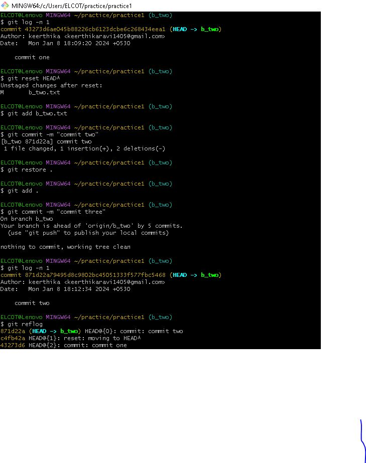

what is git?
- git is a free, open-source distributed version control system tool designed to track changes in
computer files and coordinate work on those files among multiple people with speed and efficiency - used for source code management in software development
- used to keep track of changes in any set of files.
- git is one of the most widely used VCSs and it has become the de-facto standard of versioning,
adopted by both open source as well as corporations in their development toolbelt. - git is called a DVCS (Distributed Version Control System)due to having a distributed architecture
- Rather than have only one single place for the full version history of the software as
is common in once-popular version control systems like CVS or Subversion (also known as SVN), - In git, every developer’s working copy of the code is also a repository that can contain the full history of all changes.
A brief history of git?
- In April 2005, while working on the 2.6.12 version of the Linux operating system,
Linus Benedict Torvalds was not pleased with the existing VCSs available in the market to help him manage his code
So he decided that he needed to create his own VCS to keep track of changes in the Linux core. - Although GIT is sometimes referred to as Global Information Tracker, Linus Torvalds the creator
of GIT and Linux confirmed that GIT is named after the word “git”.
In British English slang “git” means a stupid or unpleasant person. Linus Torvalds explained that he believes that he is egotistical and stated
“I name all my projects after myself. First Linux, now git.”
story why in year of 2015 linus named it as a GIT
Why is git called ‘the stupid content tracker’?
- The earlier versions of git were barely accessible, and it wasn’t really trying to be smart.
Basically, it’s just a file system because, as Linus Torvalds explained, file systems are something he understands.
Tools were built on top to make it more accessible for more people, and as such, it seems smarter,
but it’s really not trying to be smarter than it should be.
This is a good thing because it means that it is in our means to correct something that might go wrong
and mostly understand its inner workings, which helps us to use the tools better. - A blob is a bunch of bytes that represent the content of a file at a point in time.
It is important to note that it is the contents that are stored and tracked, not the files, their types, or filenames. - A tree is a collection of blobs. Directories in git basically correspond to trees.
- A commit is a reference to a tree that also contains a reference to one or more parent commits
(and some metadata, like a date, an author’s name, some explanatory text, etc.) - A tag is an object that provides a permanent shorthand name for a particular commit.
- The above are the four main object types in git, the first three being the most important to really understand the main functions of git.
All of these types of objects are stored in the git object database, which is kept in the git directory, also known as a git repository.
The git model is quite simple.
That’s it. Notice there’s nothing about patches, diffs, lines added or removed, etc. From the git conceptual model,
each revision is a complete copy of the whole project.
git is a stupid content tracker because it has no idea what’s inside those blobs,
and it doesn’t try to store fine-grained information like “lines 235–250 added, lines 404–410 removed,” or anything like that.
git doesn’t know anything about the type of content you put in it.
It does, however, give you the exact content you put in it back out.
Collaborating on git projects
To collaborate on git projects with other developers, you need to be able to manage remote repositories. A remote repository is,
at its core, another instance of the repository you’re working in that is linked so that changes made to one can be pushed to the other.
The remote repository could be hosted on a git hosting service like GitHub or GitLab,
it could be on a co-worker’s machine, or it could even be another folder on your local machine.
In a typical git project, there is one remote repository known as the “Central” repository. The central repo is almost always hosted either on a
private server setup for this explicit purpose or on a git hosting service. Since creating your own git server is fairly complex,
most people rely on a git hosting service to house their central repositories.
The most widely used git hosting service in the world today is GitHub. GitHub offers all of the distributed version control and source code management
(SCM) functionality of git and adds on the top of it its own features for code review, project management, integrations with other developer tools,
team management, and documentation. The other alternative git hosting services like GitLab and BitBucket also have similar features.
However, these services are owned by corporations and carry many risks like vulnerable to censorship, single point of failure, lack of community
say in policy-making, etc. These problems have encouraged many developers to start looking at alternative git hosting services to host their repositories.
Gitopia is a decentralized git hosting service with many added features to make collaboration on code easy and accessible. Gitopia proposes a system that stores
git repositories in a decentralized network, one that is highly accessible, censorship-resistant, and empowers communities to innovate, create and contribute open-source code.
Gitopia introduces git version control to a wider audience. Gitopia, by using git as its base for version control and collaboration,
empowers its users to track the history of changes as people and communities collaborate on projects together. As the project evolves,
the community can run tests, fix bugs, and contribute new code with the confidence that any version can be recovered at any time.
Developers can review project history to find out:
What changes were made?
Who made the changes?
When were the changes made?
Why were the changes needed?
With git and the power of blockchain, Gitopia ensures permanent storage of every single version of the code ever created by the developers.
table of content
why should learn git
git workflow
type of git workflow
git vs bash vs gitbash
why we need to run linux command on window with help of gitbash
feature of git
advantage of git
disadvantage of git
do and don’ts of git
what is github
git vs github
what is version control system
centralized and decentralized vsc
(svn )vs (tfvs) vs (cvs) vs (vss)
(git) vs (Mercurial) vs (bazaar)
(github) vs (gitlab) vs (bitbuckets)
different commands in git
why should learn git?
start with example
Imagine you are coloring on a flower-theme coloring book. You just thoroughly colored in green for the leaves and now it's time for you to get to the best part, coloring the petal. You know you enjoy red the best but it looked horrible after you finished it. With git, you can revert your choice of red in a heartbeat and you are also free to reapply the red if you change your mind. You sister came across your coloring book and she wants a piece of this. This is your coloring book and you don't trust her color-theory ability. With Git, you can grant her access to this coloring book; where she can copy the current state of your work and give it her own spin. Once she is done with it, you can accept or deny her work without affecting yours. With Git, a work doesn't have to be permanent; every action is recorded, reversible, and shareable.
- Leverage online tutorials
- Rollback a mistake
- Learn to break things down
- Revision made easy
override the code as the series continues. For example, the code from episode 1 gets replaced by the code from episode 2. They leave us with only the latest version of the code. Git saves all versions of code as a separate commit. Therefore, we will have a variety of references when we develop our own project.
We learn a lot by wrestling with bugs.
Nonetheless, there will be the time when we are stuck. For instance, bug logs are not helpful,
Google gives a bunch of irrelevant results, or community supports, such as StackOverflow, don’t understand our problems.
Git creates a checkpoint where we can rollback to, reassess the strategy, and get back in the ring.
Furthermore, a rollback encourages trial-and-error.
We experiment with the code, rollback if not satisfied, until we come up with the most elegant solution.
To leverage a rollback, a commit must be small. We would rather rollback 20 lines of code than 200 lines.
Using Git trains us to break a big problem down into small committable units. Breaking things down helps devising a bird-eye-view plan.
The clear directional plan saves us from getting lost in the maze of code.
How many of us return to the project after a long while and it looks at us as we are a stranger?
— Programmer “Hey, sweetheart,”
— Project “Do I know you?”
— Programmer “Com’ on! I’ve been away for a while, but I never stop thinking about you,”
— Project …
— Programmer “Oh, please. Not again,”
Looking at an old project can be bewildering, if not intimidating. The project repository consists of numerous files.
Each file contains hundreds, if not thousands, lines of code.
We rub our head and question,
“Where do I start?”
Git gives us the simple answer,
“Start with the first commit and work the way up to where we left off.”
It helps us track the flow of the development, thus speeds up the revision.
Git stores versions of code as a reference that helps speeding up learning and revision. It also encourages trial-and-error and trains us to plan before we code
git workflow
Gitflow comes from the combination of “Git” and “workflow”. Gitflow is a popular Git branching model that organizes work into five or more branch types.
These types of branches are the main branch, develop branch, feature branch, release branch, and hotfix branch.
Gitflow helps teams organize their work so that they can quickly and visually describe the workflows associated with their branching strategy and releases.
- Step 1: Start with Your Master Branch
- step 2: Draw a Development Branch for Work in Progress
- Step 3: Connect Your Branches to Show Where Work is Created and Merged
- Step 4: Add Additional Branches for Features, Releases, and Hotfixes
The master branch of your gitflow diagram describes production releases, so all changes and development work completed funnel up to this branch.
You can add additional circles to represent additional product releases and versions moving down this branch.
The second branch in your gitflow diagram is the development branch
This branch is used throughout the development process for pre-production code — so a lot of work between released versions of your product will branch off of this line.
Using the connector tool, draw arrows between the circles on the master and development branches to show where work is being created and merged.
While most of the work will take place on the develop branch and the master branch tracks what work is completed and released,
there are three additional branches to support your work. These are the release, hotfix, and feature branches.
Add feature branches below your develop branch; this allows you to describe the workflow of specific features being developed off of and merged back onto the development branch.
If you add a release branch or hotfix branch, it would sit between the develop and master branches because it describes work being done to move work from development to the product.
type of git workflow
Five Popular Git workflows For Better Code
- Centralized Workflow
- Create a central repository on a remote server, such as GitHub or GitLab.
- Clone the repository locally, so each developer has their own working copy.
- Make changes to the code locally, then commit and push these changes to the central repository.
- Be aware that the centralized workflow can lead to merge conflicts if multiple developers are working on the same file simultaneously. To mitigate this, ensure developers communicate effectively
and consider adopting a code review process to minimize conflicts. - Feature Branch Workflow
- Create a new branch for each feature, ideally with a descriptive name.
- Make changes and commit them to the feature branch.
- When the feature is complete, merge it back into the master branch, resolving any conflicts.
- Keep in mind that managing multiple feature branches can become complex.
- Establish a clear naming convention for branches and ensure developers communicate about their work to avoid confusion
- Gitflow Workflow
- Forking Workflow
- Fork the main repository to create a personal copy.
- Clone the forked repository locally and make changes.
- Push the changes to the forked repository.
- Submit a pull request to the main repository, requesting that your changes be merged.
- To keep your fork up-to-date with the main repository, regularly fetch and merge changes. Additionally,
ensure that you communicate with the project maintainers and follow the project's guidelines for submitting pull requests. - Pull Request Workflow
- Create a new branch for your work, following your team's naming conventions.
- Make changes and commit them to the new branch.
- Push the branch to the remote repository and create a pull request.
- Reviewers provide feedback, and the author addresses any requested changes.
- Once approved, the pull request is merged into the main branch.
- Best practices for pull requests include providing a clear and concise description, keeping the scope of the changes small and focused, and addressing feedback promptly.
The centralized workflow is a simple and straightforward approach to using Git.
there is a single central repository with a "master" branch where all developers push their changes. This workflow is similar to using a traditional version control system like Subversion
Benefits of the centralized workflow include its simplicity and reduced overhead. With a single branch, developers can focus on making changes without the complexity of managing multiple branches.
The feature branch workflow is a popular approach that isolates the development of individual features in separate branches. Doing so helps maintain a clean and stable master
branch while allowing developers to experiment and iterate on their features.
Benefits of the feature branch workflow include improved collaboration and reduced risk of breaking the main branch. By isolating feature development, teams can better manage and integrate their work.
The Gitflow workflow is an advanced branching model designed to support complex projects with multiple release cycles. It involves several branches, including "master," "develop," "feature," "release," and "hotfix" branches.
In Gitflow, the master branch represents the latest stable release, while the development branch is used for ongoing development. Feature branches are created from the development branch, and once completed,
they are merged back into development. When a release is ready, a release branch is created from development and eventually merged into the master. Hotfix branches are used to address critical issues in production and are merged directly into the master.
Benefits of the Gitflow workflow include its structured approach to managing releases and addressing issues in production. This model is well-suited for projects with strict release schedules or those requiring a high degree of stability.
To set up the Gitflow workflow, consider using a Git extension like "git-flow," which automates the process and enforces best practices. For a more organized version control history, explore techniques like Git squash commit to enhance code quality.
The forking workflow is commonly used in open-source projects and encourages collaboration by allowing contributors to work independently. In this model, each developer forks the main repository, creating their own copy. They make changes in their fork
and submit pull requests to the original repository when their work is complete.
Benefits of the forking workflow include its ability to support a large number of contributors and its emphasis on maintaining a clean and stable main repository. This workflow is particularly useful for open-source projects,
where developers from different backgrounds and skill levels contribute.
The pull request workflow is centered around the concept of code reviews and collaboration. In this model,
developers create branches for their work and submit pull requests when their changes are ready for review.
Team members review the changes, provide feedback, and approve or request modifications before the changes are merged into the main branch.
Benefits of the pull request workflow include improved code quality, knowledge sharing, and a collaborative development process.
This workflow is often used in conjunction with other workflows, like the feature branch workflow or the Gitflow workflow.
git vs bash vs gitbash
Every Windows PC comes with Command Prompt (cmd), a command-line textual interface to your operating system. Using Command Prompt, you can install programs, create new users, and run scripts.,
The closest equivalent to Command Prompt for Unix-like machines is Bash. Bash is often seen as superior because of its powerful features. These include arithmetic, array variables, loops, and branches.
Git Bash provides Windows users with access to Bash and its advanced features.
- What Is Git?
- What Is Bash?
- What Is Git Bash?
Git is a version control system. It tracks the changes you make to a collection of files using commits. Commits allow you to capture the state of a project at a particular point in time.
And Git allows you to go back to a previous commit whenever you want.
You can install and run Git locally or use one of its online hosts (such as GitHub or Bitbucket).
But Git is fundamentally a Unix-style command-line utility program. It even comes installed on some macOS and Linux systems.
Git is probably the most popular version control system in the world today. This is due to its collaborative features.
Branching allows you to create independent local versions of a codebase that you can later merge with others.
This is one of the main reasons why programmers use Git to share their contributions to source code development.
Git is also open source, free to use, and easy to learn.
The acronym Bash stands for Bourne Again Shell.The Bourne shell is used for scripting. It provides command-based programming to interpret and execute user commands. As a user types a command,
the shell interprets it so the operating system can take action, such as automating a task. The Bourne shell was the default shell for Unix version 7.
Bash has all the Bourne shell core features such as grammar and variable expansion
Although Git is a collection of command-line utility programs, you can use it on Windows via a GUI-based app. Bash is only available on Unix-like operating systems, like macOS and Linux.
Git Bash is strictly for Microsoft Windows users. It provides an emulation of both Git and the Bash command-line environment.
Installing Git Bash on your Windows machine gives you access to a shell environment that is native to macOS and Linux users.
why we need to run linux command on window with help of gitbash?
A Linux command is a program or utility that runs on the command line. A command line is an interface that accepts lines of text and processes them into instructions for your computer.
You probably know what Git is. It’s a version control system developed by Linux creator Linus Torvalds.
Git for Windows is a set of tools that allows you to use Git in both command line and graphical interfaces. One of the tools included in Git for Windows is Git Bash.
Git Bash application provides and emulation layer for Git command line. Apart from Git commands, Git Bash also supports many Bash utilities such as ssh, scp, cat, find etc.
In other words, you can run many common Linux/Bash commands using the Git Bash application
Command Usage
ls Lists the content of a directory
alias Define or display aliases
unalias Remove alias definitions
pwd Prints the working directory
cd Changes directory
cp Copies files and directories
rm Remove files and directories
mv Moves (renames) files and directories
mkdir Creates directories
man Displays manual page of other commands
touch Creates empty files
chmod Changes file permissions
./ Runs an executable
exit Exits the current shell session
sudo Executes commands as superuser
shutdown Shutdowns your machine
htop Displays processes and resources information
unzip Extracts compressed ZIP files
apt, yum, pacman Package managers
echo Displays lines of text
cat Prints file contents
ps Reports shell processes status
kill Terminates programs
ping Tests network connectivity
vim Efficient text editing
history Shows a list of previous commands
passwd Changes user password
which Returns the full binary path of a program
shred Overwrites a file to hide its contents
less Inspects files interactively
tail Displays last lines of a file
head Displays first lines of a file
grep Prints lines that match patterns
whoami Outputs username
whatis Shows single-line descriptions
wc Word count files
uname Displays OS information
neofetch Displays OS and hardware information
find Searches for files that follow a pattern
wget Retrieves files from the internet
feature of git?
- Distributed:
- Branching and merging:
- History tracking:
- Staging:
- Speed:
- security:
- Open Source:
- Work flow
- scalable
- Supports non-linear development in git
- backup
Git is a distributed version control system that enables developers to work on a codebase without needing to be connected to a central server This allows for a more flexible and decentralized workflow, as developers can work independently and merge their changes later.
Branching and merging: Git enables developers to create and manage branches of a codebase, which allows for parallel development and experimentation.
Git also provides tools for merging branches back into the main codebase, ensuring that changes are integrated smoothly.
Git maintains a detailed history of all changes made to a codebase, enabling developers to track the evolution of the codebase over time.
This history can also be used to revert changes or to identify the source of bugs.
Git provides a staging area, also known as the index, where changes can be reviewed and prepared for committing to the codebase.
This enables developers to carefully review and selectively commit changes, rather than committing all changes at once.
Git is designed to be fast, even with large repositories. This is achieved through the use of efficient data structures and algorithms.
Git uses hashes in two important ways. When you commit a file into your repository, Git calculates and remembers the hash of the contents of the file.
When you later retrieve the file, Git can verify that the hash of the data being retrieved exactly matches the hash that was computed when it was stored.
Git is an open-source project, which means that anyone can contribute to its development.
This has led to a large community of users and contributors who provide support and contribute new features.
The most popular Git development workflow and the entry stage of every project. The idea is simple: there is one central repository.
Each developer clones the repo, works locally on the code, creates a commit with changes, and pushes it to the central repository for other developers to pull and use in their work
Git LFS lets you push files that are larger than the storage limit to GitHub.
It does this by storing references to the file in the repository, but not the actual file. In other words, Git LFS creates a pointer file that acts as a reference to the actual file, which will be stored somewhere else.
Git allows users from all over the world to perform operations on a project remotely.
A user can pick up any part of the project and do the required operation and then further update the project. This can be done by the Non-linear development behavior of the Git
GitHub can be used for: Backup your code on cloud. Coolaborate with people around the world on open and closed projects. Clone projects and use them as template. Make a virtual portfolio of your programming work.
Advantage of git
• Easy Code Hosting
• Modify History
• Increased Code Safety
• Debugging
• Easy Project Management
• Effective Team Management
Disadvantage of git
There are rather just a few limitations of the Git repos because, in comparison to other VCS or SVN, Git is still a #1 choice of developers for creating and storing contents of software application.
- Businesses who need to use advanced GUI features have to rely on third-party software in addition to Git.
- The code merging tool of Git produces some time-consuming conflicts, thus it still needs some improvement.
- People who are used to work with CVS (Concurrent Versions System) and SubVersion or are complete newcomers will have a hard time moving and learning Git.
- The Git was primarily designed for the Linux kernel system, so the support for other systems would be rather slow.
- The force pushing the remote repo will override the code and the existing code may get lost.
- If any developer tries to rebase the remote repo, it will alter the commit history, which will then create issues if others try to pull the latest code from the same repo
do's and don’ts of git
do's of git
- Create a new repository for every new application development project.
- Make a habit of creating a new branch for every bug, issue, or feature addition.
- Commit and push changes to a remote repo so that loss of work is avoided.
- Use gitignore in project files so that Git repo can ignore the untracked or unwanted files to be committed
- Write up a commit message with a clear and concise subject line and description of the changes made and why were they made.
- If something goes sideways than what actually you have planned, then stop the work and ask for help from your lead developer.
The benefit of using DVCS like Git is that any changes or modifications made are reversible and there are high chances of getting a modified repo into its original form. - Run git gc periodically in the Git repos to speed them up and shrink the space consumed by them on the disk.
- Safeguard your important Git repo branches like master and development against any accidental loss by adding protection layer.
- Also, add permission to read/write to control who can access the Git repos to prevent any unauthorized use.
- Merge distributed feature branches once the issue, the bug is fixed or features are added into the intended branch and then delete the rest repos.
- Also, make a habit to create a pull request when merging the one repo branch to another.
- Review the code changes you have made before going to create a pull request.
don'ts of git
- Don’t commit changed or modified branch to the master or development branch directly.
- Refrain from making commit of application secrets in public repos.
- Don’t name master and develop branches of repos with names like “Master” or “Develop/Development.”
- Don’t change/delete the history of published repos.
- Don’t make large commits because it can intermix the multiple unconnected changes.
- Also, don’t commit large binaries to any Git repo because it will eat up the large chunk of storage space required to clone by others.
- Refrain from working on multiple issues in one branch, if any feature is dropped, it might get hard to revert changes
- Don’t reset a distributed branch before committing change/modifications, because after doing so you will lose all the changes.
- Don’t create one pull request that addresses more than one or two issues.
what is github?
GitHub is offers a cloud-based Git repository hosting service for software development and version control using Git, allowing developers to store and manage their code.
Essentially, it makes it a lot easier for individuals and teams to use Git for version control and collaboration.
Thomas Dohmke - Chief Executive Officer - GitHub
Founding. Development of the GitHub platform began on October 19, 2007. The site was launched in April 2008 by Tom Preston-Werner, Chris Wanstrath, P. J. Hyett and Scott Chacon after it had been available for a few months as a beta release
But by 2018, Microsoft had already become one of the heaviest users of GitHub and was maintaining many of the most actively developed
June 2018, Microsoft said it was buying GitHub for a whopping $7.5 billion.
git vs github?
| git | github |
|---|---|
| Git is software. | It is a service. |
| Linux maintains Git. | Microsoft maintains GitHub. |
| It is a command-line tool. | It is a graphical user interface. |
| You can install it locally on the system. | It is hosted on the web. It is exclusively cloud-based. |
| It is a VCS to manage source code history. | It is a hosting service for Git repositories. |
| focuses on code sharing and version control. | It focuses on centralized source code hosting. |
| It lacks a user management feature. | It has a built-in user management feature. |
| Git was launched in 2005. | GitHub was released in 2008. |
| It is open-source licensed. | It has a free-tier and pay-for-use tier. |
| Its desktop interface is named Git Gui. | Its desktop interface is named GitHub Desktop. |
Version control systems
VCS are software tools that help software teams manage changes to source code over time
version control systems help software teams work faster and smarter.
They are especially useful for DevOps teams since they help them to reduce development time and increase successful deployments.
Software developers working in teams are continually writing new source code and changing existing source code. The code for a project, app or software component
is typically organized in a folder structure or "file tree". One developer on the team may be working on a new feature while another developer fixes an unrelated bug by changing code,
each developer may make their changes in several parts of the file tree.
Version control helps teams solve these kinds of problems, tracking every individual change by each contributor and helping prevent concurrent work from conflicting.
centralized and decentralized vsc
| centralized | decentralized |
|---|---|
| In CVS, a client need to get local copy of source from server, do the changes and commit those changes to centeral source on server. | In DVS, each client can have a local branch as well and have a complete history on it. Client need to push the changes to branch which will then be pushed to server repository. |
| CVS systems are easy to learn and set up. | DVS systems are difficult for beginners. Multiple commands needs to be remembered. |
| CVS system do not provide offline access. | DVD systems are workable offline as a client copies the entire repository on their local machine./td> |
| CVS is slower as every command need to communicate with server | DVS is faster as mostly user deals with local copy without hitting server everytime. |
| If CVS Server is down, developers cannot work. | If DVS server is down, developer can work using their local copies. |
| focuses on synchronizing, tracking, and backing up files | Focuses on sharing changes |
| centralized version control is the simplest form of version control in which the central repository of the server provides the latest code to the client machines | Distributed version control is a form of version control where the complete codebase (including its full history) is mirrored on every developer's computer |
| Centralized | Decentralized |
|---|---|
| → TFVC | → Git |
| → Subversion | → Mercurial |
| → CVS | → Bazaar |
| → VSS | |
| → perforce |
(svn )vs (tfvs) vs (cvs) vs (vss)
- svn
- SVN stands for Subversion , It is a centralized version control system. It is an open-source tool for version control.
- SVN uses binary format to store repository
- SVN is used to manage the current and previous versions of files like source code, documentation, and files.
- Some other popular version control systems like Git are in trend now, but there are a large number of projects that are still running on the Subversion.
- Subversion is open-source and comes under the Apache License, and it was developed by CollabNet Inc in 2000. It was operated much like CVS (Concurrent versions system).
In 2009, Apache Incubator accepted it and made it a top-level apache product.
Programming language: C - Apache Subversion is a software versioning and revision control system distributed as open source under the Apache License. Software developers use Subversion to maintain current and historical versions of files such as source code, web pages, and documentation
- Tfvc
- Team Foundation Server (Microsoft TFS)
- you tell the version control system to take a snapshot of your files. The version control system saves that snapshot permanently so you can recall it later if you need it.
- it is also known as Azure DevOps Server.
- cvs
- Concurrent Versions System
- CVS has a systematic mechanism of maintaining tags and branches.
- CVS uses RFC-(Request for Comments) format to store repository.
- CVS changes are time consuming.
- CVS do not commit if there is error into the commit.
- vss
- Visual Source Safe
- VSS', is the source control system from Microsoft. This tool was originally developed by another company and later taken over by Microsoft. Microsoft recently developed a team collaboration tool called "Visual Studio Team System" (VSTS).
- Microsoft Visual SourceSafe is a discontinued source control program oriented towards small software development projects. Like most source control systems, SourceSafe creates a virtual library of computer files
- VSS was one of the most popular source control and management tools from Microsoft, which is now discontinued.
VSS commits are not atomic.
Renaming a file or folder affects the whole history
Users can get locked when trying to commit changes to a common file at the same time. - Initial release date: 1994Developer: Microsoft Corporation
Final release: 2005 (8.0.50727.42) / October 2005; 17 years ago
License: Proprietary commercial software
Operating system: Windows - Perforce
- perforce is chargable repo ,where the charges as increase where taem size increase
- In Perforce, when you share a file between the team, the receiving team has to manually separate the changes that they were implement in their project
- perforce requires server to connected to make any changes in the repo
In each developer tries to accessthe server to see the chance made it slow down the productivity in case
feature of svn:
Atomic Commits
Full Revision History.
File Locking
Versioning of Symbolic links
Path-based Authorization
Language Bindings
Standalone Server option
Team Foundation Server is Microsoft's "all-in-one" Application Lifecycle Management solution. It contains capabilities for Agile project management,
source control, continuous integration (build), continuous delivery (release), manual test case management, and more. It also has SharePoint integration and a data warehouse to facilitate easy reporting.
It's been around for about 10 years now, introduced in 2005 as Visual Studio Team System. Since then it's received 5 major versions (2008, 2010, 2012, 2013, and now 2015)
with innumerable service packs, patches, and quarterly updates.
TFS is an on-premise solution, consisting of (in a best-practices style setup) anywhere from 2 to 5 servers.
There is no such thing as "Team Foundation Service" anymore. It's called Visual Studio Team Services these days. Team Services is "TFS in the cloud", hosted and maintained by Microsoft in the Azure data centers.
It's the exact same codebase as TFS on-prem, except it's updated more frequently (every 3 weeks). There are some capabilities in TFS on-prem that aren't available in Team Services and vice versa. For example,
Team Services does not have SharePoint integration or reporting. The upside here is that there's no infrastructure to maintain or software to
upgrade -- upgrades happen every 3 weeks, with no downtime. This is a huge draw for smaller shops.
Team Foundation Version Control is one of the two native options for source control in TFS/Team Services. It's a centralized version control system, similar in paradigm to Subversion.
Concurrent versions System is functional version control system which is developed by Dick Grune as series of shell scripts.
This helps the teams to be connected to the changes that are measured into repository when working on software.
This tool was used as the version control system for long for time.
It is reliable software tool but with new challenges other alternatives made it used as limited.
(git) vs (Mercurial) vs (bazaar)
- git
- Global Information Tracker
- Git is a free and open source distributed version control system designed to handle everything from small to very large projects with speed and efficiency.
Git is easy to learn and has a tiny footprint with lightning fast performance. It outclasses SCM tools like Subversion, CVS, Perforce,
and ClearCase with features like cheap local branching, convenient staging areas, and multiple workflows. - Programming languages: Python, C, C++, Shell script, Perl, Tcl
Developer: Linus Torvalds, Junio C Hamano
Initial release date: 7 April 2005
License: GPL-2.0-only
Operating system: POSIX (Linux, macOS, Solaris, AIX), Windows - . Its goals include speed, data integrity, and support for distributed, non-linear workflows
- Mercurial
- Mercurial came into existence in 2005 as an open-source version control system, as an alternative to the closed-source BitKeeper and was developed by Matt Mackall.
- Unlike SVN, which is a centralized version control system, Mercurial is a distributed version control system. That is, when you push changes to the repository, it will go to the local machine.
Because of this, the process becomes very faster, since you’re not constantly pushing to a remote serve - Mercurial is a free, distributed version control system. It's also referred to as a revision control system or Mercurial source control. It is used by software development teams to manage and track changes across projects.
It launched in 2005. But its popularity has since faded. It still has a handful of large development organizations using it — including Facebook, Mozilla, and World Wide Web Consortium (W3).
But it only has about 2% of the VCS market share. - his is also one of the reasons that Mercurial is mostly used as a command-line tool, though there are GUI tools available. Mercurial has been the version
control system used by big brands like Adium, Mozilla, Netbeans, Vim, Growl and so forth. Apart from these, a lot of individual developers use Mercurial to manage their code. - bazaar
- GNU Bazaar is a distributed and client–server revision control system sponsored by Canonical. Bazaar can be used by a single developer working on multiple branches of local content, or by teams collaborating across a network.
- Programming languages: Python, C, Pyrex
- Initial release date: 26 March 2005
Installing on Ubuntu
Developer: Canonical, Free Software Foundation
Final release: 2.7.0 / 15 February 2016 - Easily collaborate, track project history with an excellent free and open source version control software based on central and distributed repository model.
- Bazaar supports number of different models. It consists of centralized, online-offline, feature branching and shared working tree models.
- software teams can do code reviews for feature branching and email bundles. Bazaar has excellent plugin architecture that enables teams to extend the functionality. It supports APIs that developers can use to integrate with their existing tools.
(github) vs (gitlab) vs (bitbuckets)
- github
- GitHub Gist: lets users share pieces of code or other notes.
- GitHub Flow: is a lightweight, branch-based workflow for regularly updated deployments
- GitHub Pages: are static webpages to host a project, pulling information directly from an individual's or organization's GitHub repository.
- GitHub Desktop: lets users access GitHub from Windows or Mac desktops, rather than going to GitHub's website.
- GitHub Student Developer Pack: is a free offering of developer tools for students. It includes cloud resources, programming tools and support, and GitHub access.
- GitHub Campus Experts: is a program students can use to become leaders at their schools and develop technical communities there.
- GitHub CLI: is a free, open source command-line tool that brings GitHub features, such as pull requests, to a user's local terminal. This capability eliminates the need to switch contexts when coding, streamlining workflows.
- GitHub Codespaces: is a cloud-based development environment that gives users access to common programming languages and tools. The coding environment runs in a container and gives users a certain amount of free time before switching to a paid pricing model.
- gitlab
- GitLab hosts your (private) software projects for free.
- GitLab is a user friendly web interface layer on top of Git, which increases the speed of working with Git.
- GitLab provides its own Continuous Integration (CI) system for managing the projects
- GitLab provides GitLab Community Edition version for users to locate, on which servers their code is present.
- GitLab provides unlimited number of private and public repositories for free.
- The Snippet section can share small amount of code from a project, instead of sharing whole project.
- While pushing and pulling repositories, it is not as fast as GitHub
- GitLab interface will take time while switching from one to another page.
- bitbuckets
- Bitbucket Cloud:
- Bitbucket Server
GitHub allows developers to change, adapt and improve software from its public repositories for free, but it charges for private repositories, offering various paid plans. Each public and private repository contains all of a project's files, as well as each file's revision history.
Repositories can have multiple collaborators and can be either public or private
GitHub facilitates social coding by providing a hosting service and web interface for the Git code repository, as well as management tools for collaboration. The developer platform can be thought of as a social networking site for software developers.
Members can follow each other, rate each other's work, receive updates for specific open source projects, and communicate publicly or privately.
GitLab was found by Dmitriy Zaporozhets and Valery Sizov in October 2011. It was distributed under MIT license and the stable version of GitLab is 10.4 released in January 22, 2018.
GitLab is great way to manage git repositories on centralized server. GitLab gives you complete control over your repositories or projects and allows you to decide whether they are public or private for free
feature of gitlab
Bitbucket is a Git-based source code repository hosting service owned by Atlassian. Bitbucket offers both commercial plans and free accounts with an unlimited number of private repositories.
Developer(s) Atlassian, Inc.
Initial release 2012
Stable release
7.21.0 / 28 February 2022; 18 months ago
Written in Java
Operating systemm, Platform-independent Type ,distributed revision control , revision control
License Proprietary, free for use by official non-profit organizations, charities, and open-source projects,
but not governmental, academic or religious organizations
Bitbucket Cloud (previously known as Bitbucket) is written in Python using the Django web framework
Bitbucket is mostly used for code and code review.
fearure of bitbucket cloud
Pull requests with code review and comments
Bitbucket Pipelines, a continuous delivery service
Two-step verification and required two-step verification
IP whitelisting
Merge Checks
Code search (Alpha)
Git Large File Storage (LFS)
Documentation, including automatically rendered README
files in a variety of Markdown-like file formats
Issue tracking
Wikis[10]
Static sites hosted on Bitbucket Cloud: Static websites have
the bitbucket.io domain in their URL
Add-ons and integrations
REST APIs to build third-party applications which can use any
development language
Snippets that allow developers to share code segments or files
Smart Mirroring
Bitbucket Server (formerly known as Stash[18]) is a combination Git server and web interface product written in Java and built with Apache Maven.[19] It allows users to do basic Git operations (such as reviewing or merging code, similar to GitHub) while controlling read and write access to the code. It also provides integration with other Atlassian tools.
Bitbucket Server is a commercial software product that can be licensed for running on-premises.[21] Atlassian provides Bitbucket Server for free to open source projects meeting certain criteria, and to organizations that are non-profit, non-government, non-academic, non-commercial, non-political, and secular.
git fetch
The git fetch command is used to retrieve changes from a remote repository without automatically merging them into your current working branch. It allows you to update your local repository with changes made by others on the remote repository.
git fetch [< remote> [< refspec>...]]
< remote>: The name of the remote repository. If not specified, it defaults to the remote repository specified during the clone operation.
< refspec>: Specifies which branches/tags to fetch. If not specified, it fetches all branches and tags.
git fetch(Fetch changes from the default remote (usually 'origin') )
git fetch remote_repo_name(Fetch changes from a specific remote repository )
git fetch origin master(Fetch changes from a specific branch of a remote repository)
git fetch origin '*:*'(Fetch changes from all branches of a specific remote repository)
=====
git merge origin/master
git rebase origin/master
After running git fetch, the changes are downloaded to your local repository, but your working directory and local branches remain unchanged. To incorporate the changes into your local branches, you would typically use git merge or git rebase

git restore
git restore is a Git command that allows you to restore your working directory to a specific state, either by discarding changes or by copying the contents of a specific commit or branch to your working directory.
Important : Yes, git restore can be useful before committing changes. It allows you to selectively undo changes in your working directory or staging area
1. Discard Changes in the Working Directory:
To discard changes in your working directory and restore the files to the state in the last commit
git restore .
2. Restore a Specific File:
To restore a specific file to the state in the last commit
git restore
3. Restore a Specific File to a Specific Commit:
To restore a specific file to the state it was in a specific commit
git restore --source=
4. Restore the Entire Working Directory to a Specific Commit:
To restore your entire working directory to the state it was in a specific commit
git restore --source= --staged --worktree --recursive .
5. Interactive Mode:
git restore also supports an interactive mode for more complex scenarios
git restore --source= --worktree --interactive


git status
The git status command is used to display the current status of your Git working directory. It shows information about changes that are not yet committed, changes that are staged, and any untracked files
# Untracked Files:
# Changes Not Staged for Commit:
# Changes to be Committed:
#Branch Information:

git submodules
Git submodules are a way to include one Git repository as a subdirectory within another Git repository. This is useful when you want to include an external project or library as part of your own project. Submodules allow you to keep a separate Git repository as a subdirectory while still being able to track and update its changes.
Adding a Submodule:
git submodule add (To add a submodule to your Git repository, you use the git submodule add command, specifying the URL of the submodule repository and the path where it should be added within your project.)
Initializing and Updating Submodules:
git submodule init
git submodule update
git submodule update --init(You can use the --init option with git submodule update to initialize and update submodules in one command)
Cloning a Repository with Submodules:
git clone --recursive
git submodule update --init --recursive(If you've already cloned the repository and need to initialize and update submodules:)
Working with Submodule Changes:
cd (Navigate into Submodule Directory:)
cd
git checkout (Switch Submodule to a Branch or Commit:)
Committing Changes in Submodule:
Removing a Submodule:
git add .gitmodules
git rm --cached (Remove the submodule files from the working directory:)
rm -rf (Remove the submodule directory: )
git commit -m "Removed submodule"

git switch
The git switch command is used to switch branches in Git. It is introduced in Git version 2.23 as a more user-friendly alternative to the traditional git checkout command.
1. Switch to an Existing Branch:
git switch ()
2.Create and Switch to a New Branch:
git switch -c (This command creates a new branch () and switches to it.)
3. List Available Branches:
git branch(Running git switch without any arguments lists the available branches. The currently checked-out branch is marked with an asterisk.)
4. Detach HEAD (Move to a Specific Commit):
git switch (This command allows you to move to a specific commit by detaching HEAD. It's equivalent to git checkout .)
5. Create and Switch to a New Branch with a Remote Tracking Branch:
git switch -c origin/( This creates a new branch () based on the specified remote tracking branch (origin/) and switches to it.
)
6. Discard Uncommitted Changes:
git switch -f
This forcefully switches to the specified branch () and discards any uncommitted changes.
7.Delete a Merged Branch:
git branch -d
Force Delete a Branch (Even if Unmerged):
git branch -D
Deleting a Remote Branch:
git push origin --delete
Key Differences: Syntax: git switch is designed with a focus on branch switching, leading to a more straightforward syntax for such operations. Detached HEAD State: git switch is less prone to accidentally entering a detached HEAD state compared to git checkout. Branch Creation: git switch allows creating and switching to a new branch in a single command, which can be more convenient. Choosing Between Them: Modern Workflows: For modern Git workflows that prioritize simplicity and clarity in branch-related operations, git switch is recommended. Versatility and Compatibility: git checkout remains useful for its versatility and compatibility with older Git versions.